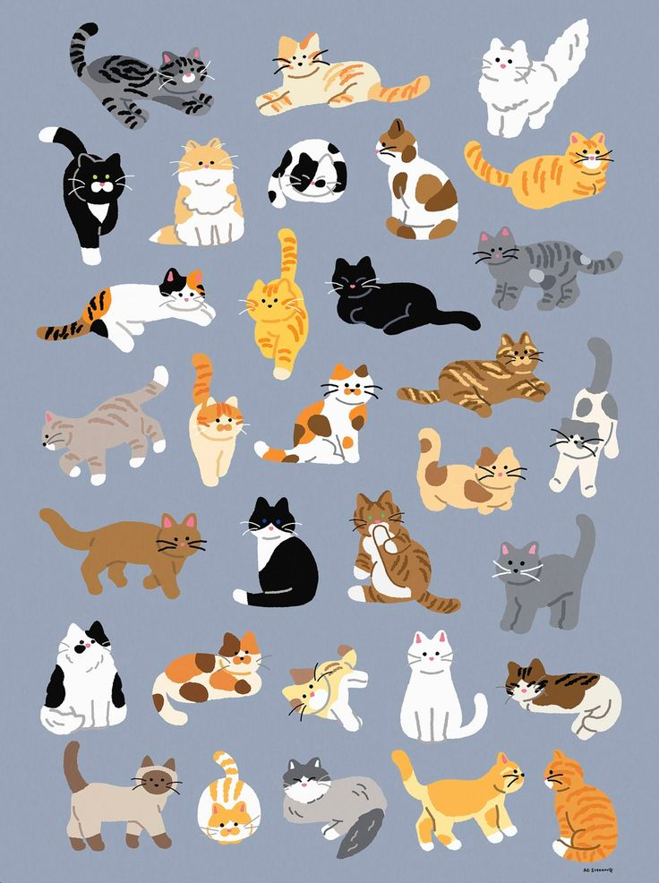

Розділити вікно на 2 частини: зліва - опис завдання та зображення маркерів,
та кнопка запуску WebAR, справа - відео з камери, до натискання кнопки - заглушка.
На рамку сканування нанести зображення маркерів, які будуть використовуватись
для запуску WebAR.
Використовуючи матеріал тижня, створіть два власні маркери, що відстежуватимуться
одночасно, та прив'яжіть до них анімовані моделі й просторовий звук.
